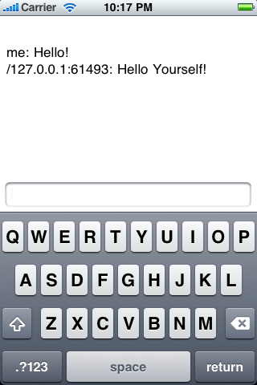

This example demonstrates how to use the OODSS library in Objective-C. In this tutorial we present the implementation of an iPhone client for the Public Chat Service. This tutorial demonstrates how to use the the Objective-C OODSS client implementation.
Access to the entire ecologylab fundamental Objective-C project source is available
through
anonymous SVN access (user: anonymous, password: anonymous).
The source for this tutorial is
located under in the Xcode project under /Classes/Applications/ChatClientTutorial/Messages
We will first show the implementation of the single request message in
the public chat service. ChatRequest is the message that is initially sent
from the client to indicate the posting of a new message to the chat service.
The ChatRequest message only contains the message being posted, stored as a String instance variable,
and passed in XML as an attribute. The code show below was generated automatically
with the java CocoaTranslator.
|
We now define the update message that is sent to clients to
indicate that another client has posted a message to the chat service.
Update messages are messages that are sent from the server to client
without being specifically requested. Updates do not require that the
client respond, if further action is necessary on the part of the client, then
it may initiate a new request. Updates must extend the UpdateMessage
class. We also show the declaration of the ChatUpdateDelegate class.
Upon reception, the client calls the processUpdate
callback that ChatUpdate overrides from the UpdateMessage
class. We implement processUpdate in a category of ChatUpdate
so that, if we have to edit the structure of chat update, we can replace
the generated source files without having to worry about
losing the implementation of processUpdate.
In this example, the client accesses the application scope to
access a delegate for chat updates, and then informs that delegate that
it has been received. The delegate is simply a class that implements the
ChatUpdateListener protocol
that has registered itself with the application scope to recieve updates
when ChatUpdates are recieved. You'll notice in the Client section that
our client registers itself in the application scope as the CHAT_UPDATE_DELEGATE.
|
|
|
|
We now give the implementation for the client (shown to the
right). Note that in the
When the user presses the return button the
The |
 |
|
|
|